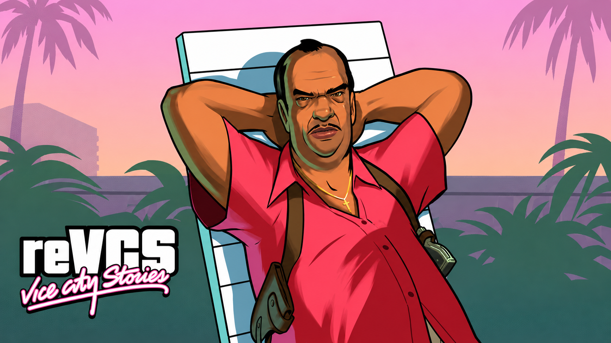
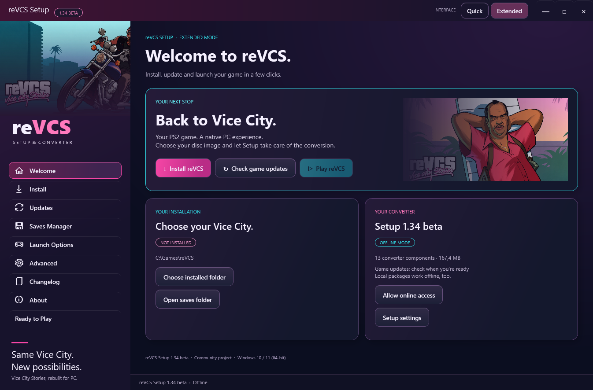

A COMMUNITY PROJECT · BUILT FOR PC
Same Vice City.
New possibilities.
Neon nights. Familiar streets. A new way back.
Bring your Vice City Stories PS2 game files to the native reVCS PC project.
Windows 10 / 11 · Your own PS2 copy required

01 / THE PROJECT
A familiar city.
A different platform.
Vice City Stories, rebuilt for PC by an independent fan project.
reVCS builds on reVC and librw, with the original VCS scripts running through its SCM virtual machine. This release uses Bullet physics and includes the work gathered in Alpha 0.55 Update 8.
Setup is your starting point. It reads your PS2 disc image or extracted disc folder, converts the source data and applies the project’s conversion recipes and patches.
Follow the project on GitHubNative PC project
Built on reVC / librw, with Windows x86 and x64 game executables.
Your game, converted
Your own PS2 files supply the original game data. No disc image is included.
Still taking shape
This is an alpha. Expect rough edges, share useful reports and help shape the next update.
LESS SETUP. MORE VICE CITY.
Meet your
way back.
One place to install, manage updates, look after your saves and launch the game.
- Quick mode for the essentials
- Extended mode for more control
- Local packages and offline installation
- Optional PCSX2 texture-pack import

02 / FROM YOUR DISC TO YOUR DESKTOP
Three stops.
Then you’re home.
- 01
Bring your PS2 copy.
Have your own Vice City Stories PS2 ISO or extracted disc folder ready. Keep the extracted folder structure intact.
- 02
Let Setup do the work.
Extract the bootstrap ZIP, run Setup and choose your source and an empty destination. Missing converter components download from GitHub.
- 03
Make it your city.
Launch reVCS, choose your in-game resolution and play. You can import your own compatible PCSX2 replacement pack in Extended mode.
Source files are read locally and stay unchanged. Conversion compatibility is checked per resource; a different language file does not automatically reject the whole disc.
03 / YOUR TICKET BACK
The city
is waiting.
Get the small bootstrap kit first.
Setup fetches the converter components when you need them.
SETUP 1.34 BETA · ALPHA 0.55 UPDATE 8
reVCS Setup
Windows 10 / 11 · 64-bit installer
What changed in Setup 1.34?
A refreshed interface, clearer installation steps and GitHub-hosted downloads and update catalogs. The game build and conversion outputs are unchanged from Setup 1.33.
BEFORE YOU HIT THE STREETS
A few things
to know.
Do I need the original game?
Yes. Supply your own Vice City Stories PS2 ISO or extracted disc folder. Setup converts those files locally. Neither this website nor the bootstrap kit provides a PS2 disc image.
Which PS2 versions can I use?
The conversion work includes EU, US and Polish-modified source testing. A full EU installation was qualified for Setup 1.33; US and Polish sources passed resource-conversion checks. Other discs are checked by their resources rather than a fixed whole-ISO hash list. This does not guarantee every modified disc will convert.
Can I install without an internet connection?
Yes. Download all 13 BIN components, the bootstrap ZIP and version.xml from the same release. Extract the bootstrap and place the BINs beside Setup. Switch to offline mode and choose your local PS2 source.
Are texture packs included?
No. Optional PCSX2 replacement textures are user-supplied. Choose your compatible ZIP or 7z pack in Extended mode.
Is this the finished game?
No. reVCS is an actively developed alpha fan project. There are known limitations and ongoing community tests. Setup 1.34 changes the installer and hosting; it does not add a new gameplay update.
What should I include in a bug report?
Describe the steps, your game and Setup versions, source-disc edition and what you expected. Include the relevant log and a short recording if useful. Remove personal information before sharing logs.
Open an installer issue